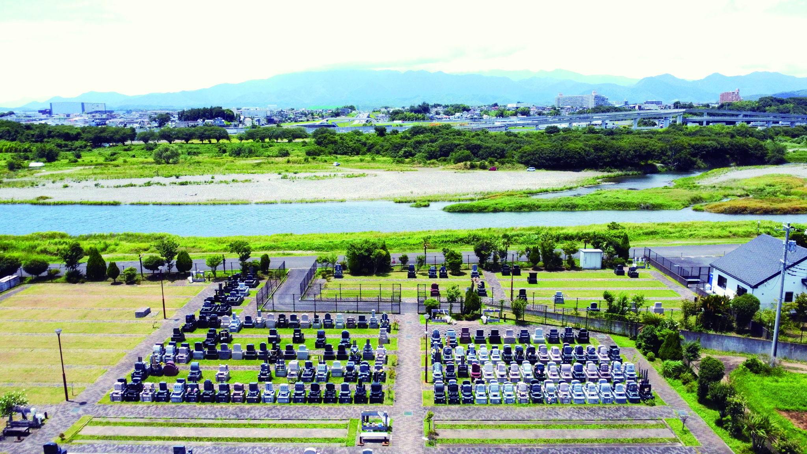
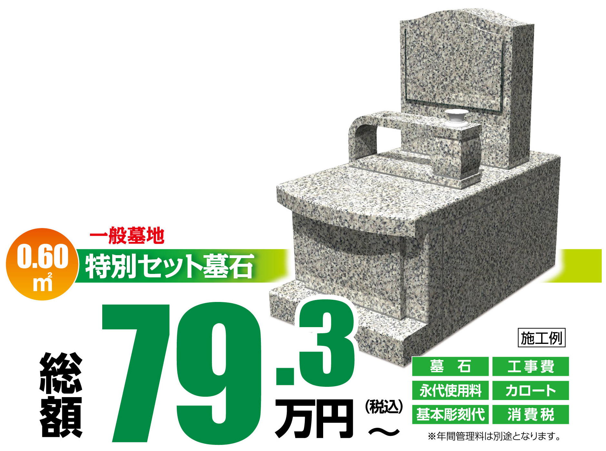
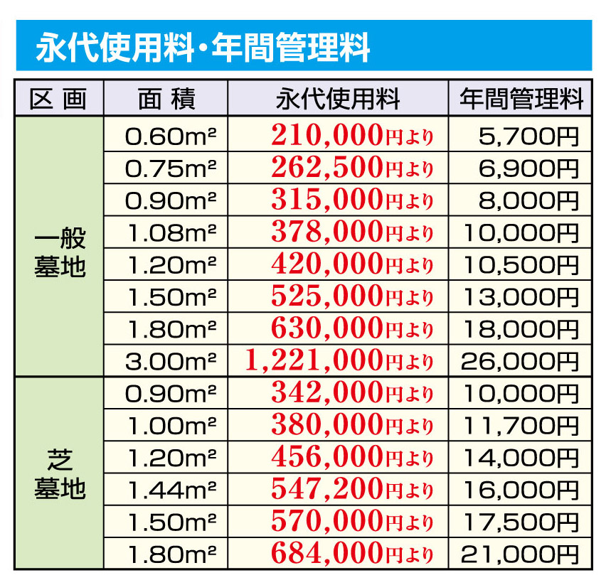
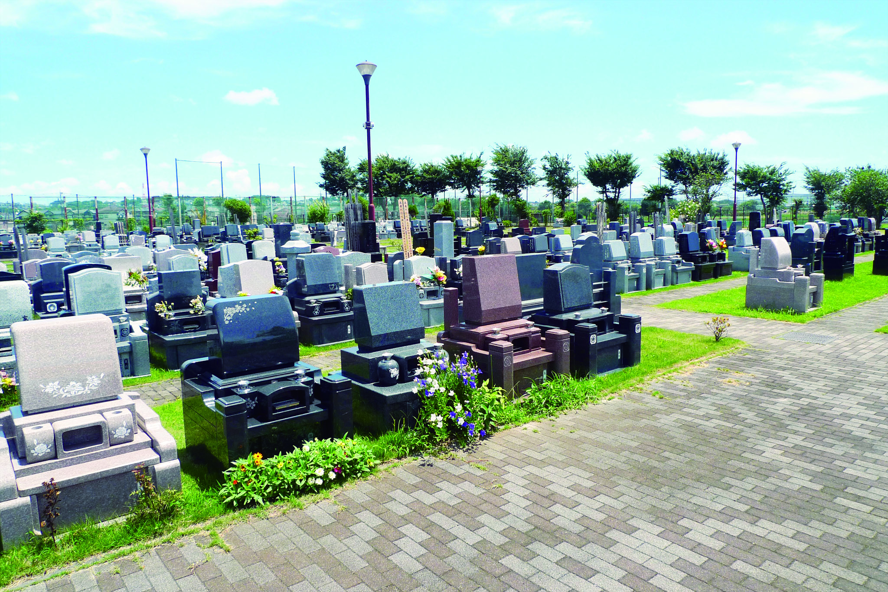
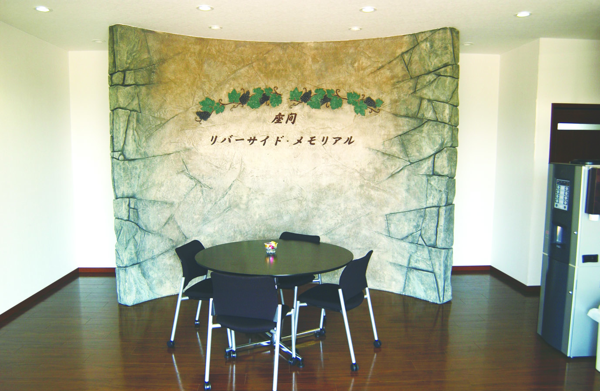
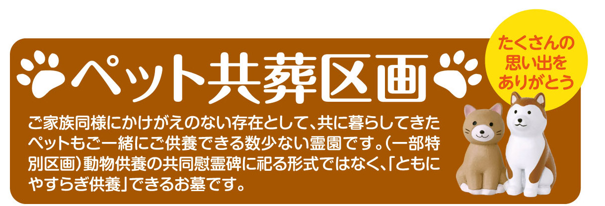
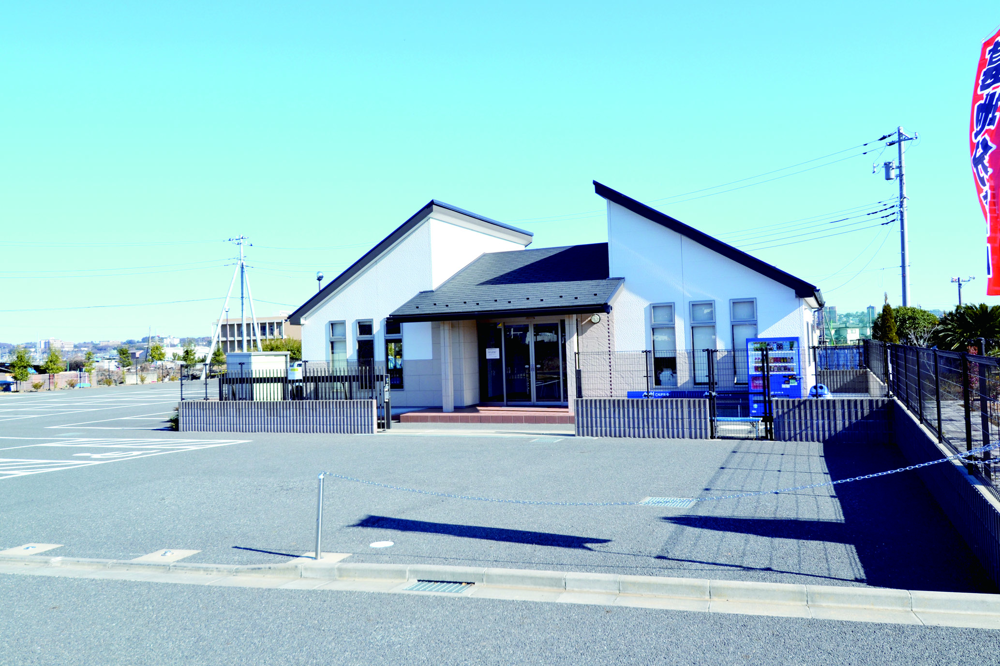
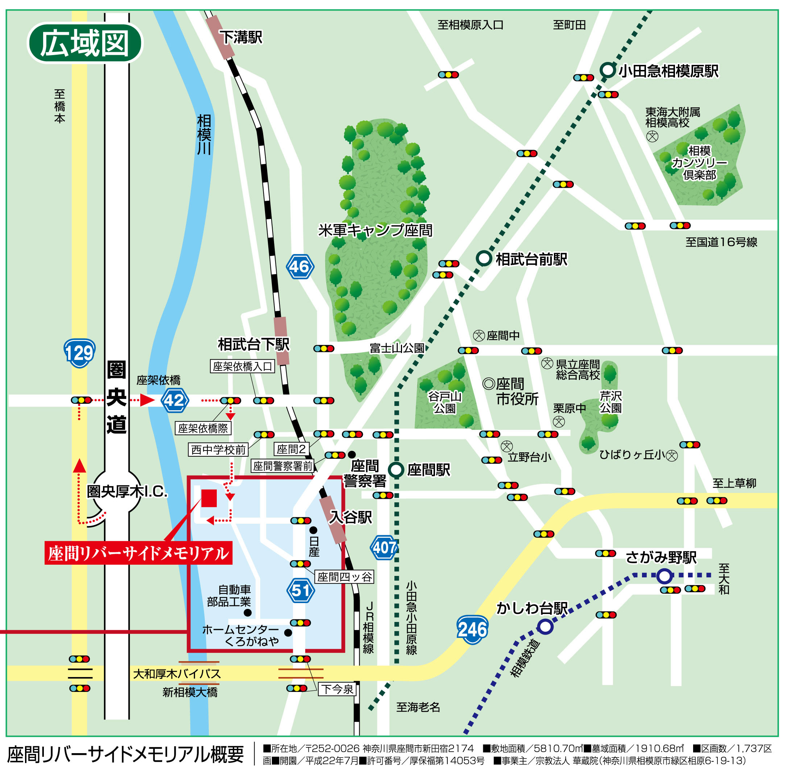
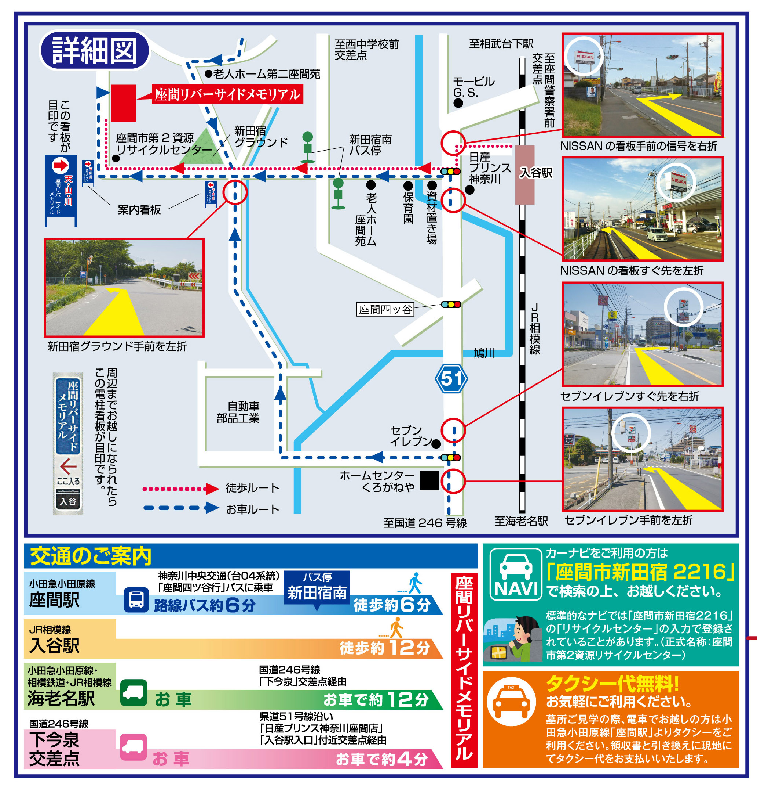

ピンチアウトまたは拡大操作でより詳細に閲覧可能です
南風霊園
相模川のたゆたう流れと、大山の荘厳な姿に見守られた開放的な霊園。
すべてが平坦で、あたたかな日差したっぷりの空間で大切な人との絆を紡ぎます。

現地案内 毎日受付 9：00～16：30（雨天実施）宗派・宗旨問わずお申し込みいただけます
ご来園の際は、霊園管理事務所にお寄りいただき、このページのトップ画面をご提示ください。現地係員が霊園内をスムーズにご案内させていただきます。
すべての費用を含んだ分かりやすい安心プライス
【0.6㎡】特別セット墓所
（墓石工事代・永代使用料・基本彫刻代・消費税をすべて含む）
※年間管理料が別途必要となります。詳細はスタッフまでお気軽にお尋ねください。

墓地を購入するときに「あとから追加費用がかかった」という心配はありません。当セットには永代使用料から彫刻、施工、消費税まで全て組み込まれております。
永代使用料（墓地使用のための権利金）
高級墓石代（厳選された高級白御影石を使用）
基本彫刻代（・家名、またはお好きな文字/・建立者名、建立年月日/・家紋その他）
外柵・カロート工事および施工代金一式
他にも多彩な区画・デザインをご用意しています

※画像をクリックすると拡大表示されます。各区画の空き状況は変動いたしますので詳細はお問い合わせください。

相模川の蕩々たる流れと厳かな姿を見せる霊峰大山。そして広く大きな天空が生きとし生けるものすべての、命のやすらぎを見守ります。爽やかな風がシュロの葉を揺らす、世俗を離れ清々しく静かで開放的な空間です。
明るくおだやかで南国を彷彿させる開放的な敷地。川沿いの遊歩道に面し、地域に親しみ愛される真の意味で開放的な墓苑づくりをめざしました。

墓域の全区画、駐車スペース、敷地全域が平坦地。管理棟にも上階がありません。エレベーターを利用するような煩わしさもなく、車いすやベビーカーをご利用の方、足腰に不安をお持ちの方でも安心していつでもお越しいただけます。
広い駐車場も墓域に直結しており、歩行に自信のない方でも車から降りてすぐにお参りいただけます。

家族同様にかけがえのない存在として、共に暮らした愛しいペットも供養できる区画がある、数少ない希少な霊園です。
霊園内の共同慰霊碑に合祀する形ではなく、同一のお墓の中で「ともにやすらぎ供養」ができるため、ずっと寄り添いたいという願いを叶えることができます。

管理棟には経験豊富な管理スタッフが常駐しており、法要のお手続き、仏壇や墓石の修繕・彫刻等のあらゆるご相談をいつでも直接お聞きします。
いつでも清潔で、美しく手入れされた植栽。皆様が気持ちよく笑顔でお参りできる環境づくりに全力を尽くしています。
「遠方にある実家のお墓を、通いやすい近所に移したい」という方が増えています。
「改葬許可申請」など、自治体への複雑なお手続きや、必要書類の書き方をわかりやすくサポート。
既存のお墓からお骨を取り出し、当霊園へ安心安全に改葬する手順を親身になって計画いたします。
今あるお墓を更地に戻して返す「墓じまい」の石材店選定や工事調整のご相談も承ります。
「まずは何から始めればいいの？」という素朴な疑問で構いません。一度お気軽にお尋ねください。
改葬・お引越しについて相談する豊かな相模川の自然が目の前に。お車でも公共機関でも好アクセス
神奈川県座間市新田宿2174
お車をご利用の場合：
圏央道「厚木IC（インター）」よりお車で約7分。アクセスのしやすさが自慢です。
公共交通機関をご利用の場合：
小田急小田原線「座間駅」よりお近くのバス等をご利用ください。


ご見学・お参りのご予定にお役立てください（管理事務所は雨天時も営業・案内中）
簡単1分入力、無料にて詳しいカラーパンフレットや料金表一式をお届けします。
ご記入いただいた連絡先あてに、担当スタッフより迅速にご連絡・資料発送をいたします。誠にありがとうございました。
開山より550年以上になる相模原緑区の由緒ある寺院、宗教法人「華蔵院」が管理・経営を行っている確固たる信頼の公認墓地です。 一度お申込みいただければ、未来永劫にわたり安心してお任せいただくことができます。
◎お申込資格
宗旨・宗派は一切問いません。どなたでもお申込みいただけます。無宗教の方、ご遺骨がない状態（生前購入）でも安心してお求めいただけます。
| 霊園名称 | 座間リバーサイドメモリアル |
| 所在地 | 神奈川県座間市新田宿2174 |
| 敷地・墓域面積 | 敷地面積：5810.70㎡ ／ 墓域面積：10.68㎡ |
| 区画数 ／ 開園 | 1737区画 ／ 平成22年7月開園 |
| 許可番号 | 厚保福第14053号 |
| 事業主（経営主体） |
宗教法人 華蔵院 （本堂：神奈川県相模原市緑区相原6-19-13） |